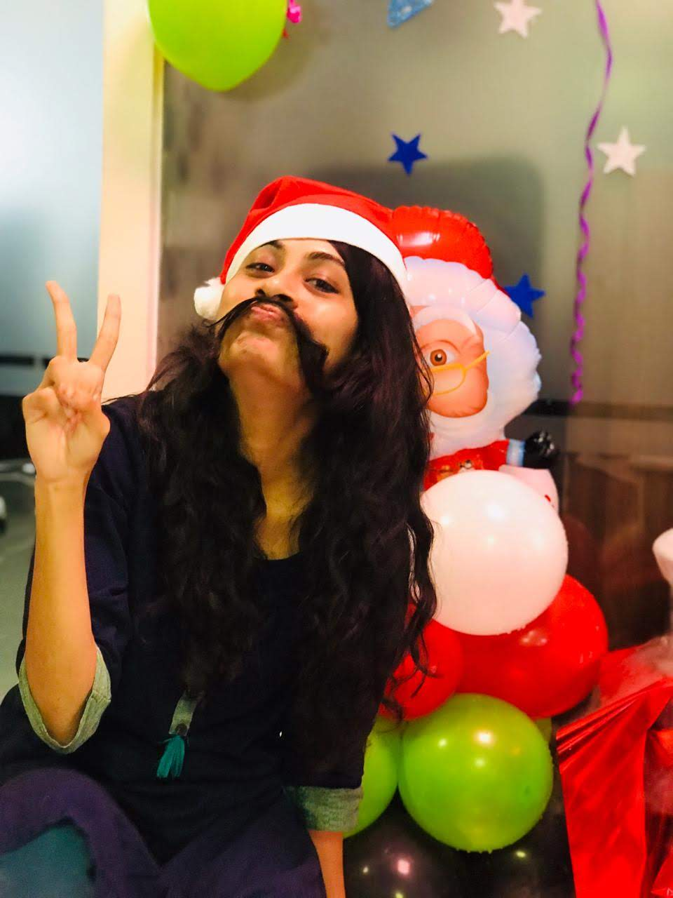

RELIABILITY
SYSTEMS
Over 7 years of specialized expertise in designing, analyzing, and implementing mission-critical cloud ecosystems at Microsoft.
Certified
Microsoft Fabric

Career_Highlights_Telemetry
- 7 Years (5+ Core Dev) in software design, analysis, and implementation of cloud/web applications.
- Deep technical stack: C#, ASP.NET MVC, Cosmos DB, Web API, ADO.NET, and SQL Server.
- Expertise in Stored Procedures, Functions, Triggers, and Performance Tuning.
- SDLC Architecture specialist including Unit Testing with Moq.
- Advanced implementation of SSO using IdentityServer3 for Mobile and Web.
- Experience in DevOps (CI/CD) and Agile/Scrum methodologies.
- Hands-on with MS Flows, Azure Functions, and RDLC Reports.
- Proven mobile dev history with Apache Cordova, Android Studio, and .apk generation.
INFRASTRUCTURE_PROJECT_SUMMARY
Azure SQL DB Capacity Management
Jan 2022 — Present | v-vdevaraju@microsoft.comFocuses on Data Analysis and Utilization in worldwide regions to ensure Minimal Utilization Percentage, avoiding hot segments and customer data issues. Managing resources through XTS, Kusto, PowerShell, Service Fabric Explorer, and Power BI.
Operational Responsibilities & Migrations
- Periodic data analysis to maintain minimal utilization levels.
- Capacity request management in specific geographic regions.
- Ensuring prevention of customer data loss through periodic analysis and corrective actions.
- Migrations: Node Re-size.
Azure Cosmos DB
Dec 2019 — Sept 2021 | v-viddev@microsoft.comGlobally distributed, multi-model database service scaling elastically across Azure regions.
Module I: Dashboard Responsibilities
- Developed module calculating total Azure Spend for environment subscriptions.
- Worked on AAD Token and unit testing for owned services.
- MS-Flows for notification triggers on azure cost and exceptions.
- Created Azure Functions and managed deployment processes.
Module II: Engineering Systems
- Pipeline monitoring for Build and Test phases.
- Microsoft-flows for daily reports and IcM creation for build failures.
- PowerShell scripts for disk clean ups and windows updates in scale sets.
- Direct client requirement gathering and TSG maintenance via .md files.
Office Management Portal
Quadrant Internal | May 2018 — Nov 2019Performance tracking, attendance maintenance, task assignment, and billing module for customers.
Full Technical Log
- Designed UI using HTML5, jQuery, and CSS with MVC architecture.
- Created stored procedures for CRUD operations using SQL Server.
- Implemented Form-based Authentication and Login Forms.
- Database Design, Table creation, and complex T-SQL code (Functions/Joins).
WATS Portal
Event Management System | .NET MVCStreamlined organization and ticketing for Washington Telugu Samithi (WATA).
Full Technical Log
- Developed, tested, and debugged C# / ASP.Net applications across browsers.
- UI Design using HTML5, JQuery and CSS.
- Stored procedures and Database design tailored to event ticketing requirements.
- T-SQL joins and complex code for reporting.
SRK Travels
Logistics AutomationManual to automated transition for transport solutions and tour organization.
- C# ASP.Net MVC cross-browser development.
- UI design and Stored Procedure creation for tour data.
- Database design for maintaining employee and customer details.
Languages
C#.NET, JavaScript, jQuery, Angular 6+, KQL, T-SQL
Tools
Azure DevOps, Git, SVN, Jira, Visual Studio 2012-2019, Android Studio
Frameworks
.NET Core, ASP.NET MVC, Entity Framework, Web API, Cordova, Ionic